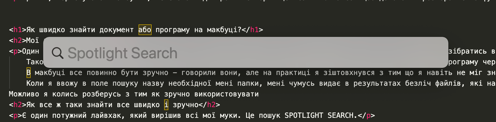
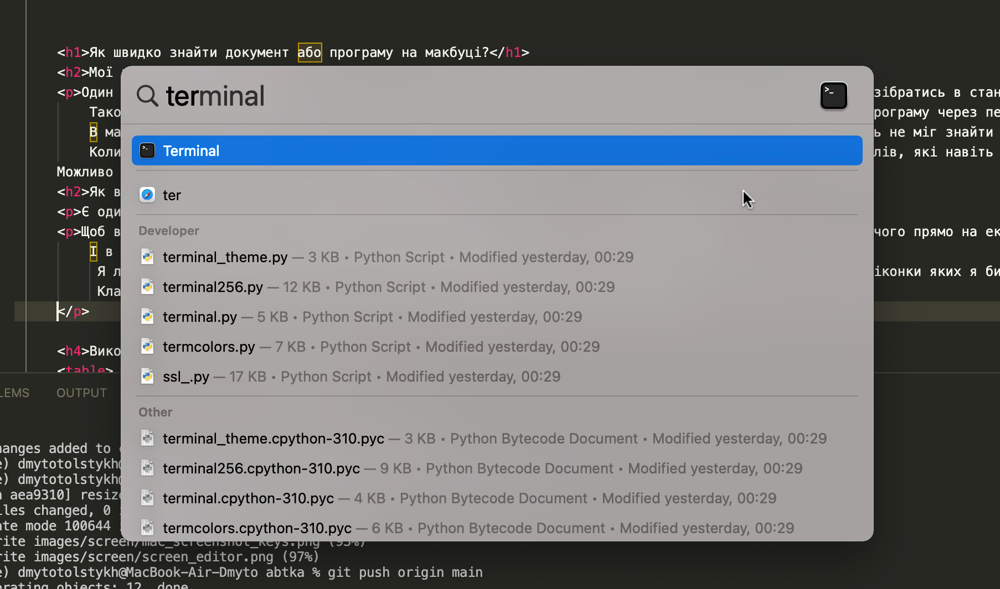

Один із челенджів при переході на мак - це пошук файлів. Тут все влаштовано не так як на вінді і розібратись в стандартній програмі Finder(файловий менеджер за замовчуванням у macOS) видається досить складно.
В макбуці все повинно бути зручно - говорили вони...
На своєму досвіді можу сказати що стандартний пошук через файндер працює не дуже, я зіштовхнувся з тим що я навіть не міг знайти свою основну папку в файндері. Коли я ввожу в поле пошуку назву необхідної мені папки, мені чумусь видає в результатах безліч файлів, які навіть не співпадають по назві, це дуже дратувало. Але як виявилось - вихід є. У цій статті ми розглянемо кілька порад як ефективно використовувати пошук на макбуці.
Метод 1: Пошук Spotlight
Spotlight — це крута функція пошуку в macOS, яка може шукати весь ваш Mac, включаючи файли, електронні листи, контакти тощо. Щоб отримати доступ до Spotlight, клацніть піктограму лупи у верхньому правому куті екрана або натисніть Command + Space. Потім ви можете ввести ключові слова, пов’язані з файлом, який ви шукаєте, і Spotlight відобразить відповідні результати.
Одного разу я дивився якийсь туторіал на ютюбі і випадково звернув увагу на строку пошуку, я знайшов SPOTLIGHT SEARCH в себе на макбуці і відтоді постійно його використовую, це реально дуже зручно.
Як відкрити SPOTLIGHT
Щоб відкрити пошук треба використати комбінацію двох клавіш COMMAND ПРОБІЛ або натиснути на іконку пошуку у верхньому меню біля значку вайфаю. Або натиснути клавішу з логотипом лупи на клавіатурі(F4, верхній ряд клавіатури)
Після чого прямо на цьому ж екрані(не треба нікуди переходити) з'явиться строка пошуку спотлайт. І в ній вже пошук працює дуже адекватно та ефективно. Я легко знаходжу документи, папки та швидко відкриваю програми назви яких я не памятаю(за першими літерами працюють підказки автозаповнення) та іконки яких я би шукав дуже довго. Клавішами вверх-вниз можна навіть подивитись предперегляд текстових файлів та зображень.


Метод 2: Ефективний пошук через Finder
Щоб шукати в Finder ефективно треба допомогти маку зрозуміти що саме ми хочемо знайти. Для цього існує розширений пошук з фільтрами.
Скористайтеся розширеним пошуком
Finder має функцію розширеного пошуку, яка дозволяє шукати файли за низкою критеріїв, таких як тип файлу, дата зміни тощо. Щоб отримати доступ до розширеного пошуку, відкрийте Finder і натисніть «Файл» > «Знайти» або натисніть Command + F. Це відкриє вікно пошуку, у якому ви зможете вказати критерії пошуку.
Використовуйте розумні папки
Розумні папки — це функція Finder, яка автоматично збирає файли на основі певних критеріїв, наприклад типу файлу або дати зміни. Щоб створити розумну папку, відкрийте Finder і натисніть «Файл» > «Нова розумна папка» або натисніть Command + Option + N. Потім ви можете вказати критерії пошуку, і Finder автоматично збере файли, які відповідають цим критеріям.
Використовуйте фільтри
Finder також має ряд фільтрів, які дозволяють звузити результати пошуку на основі певних критеріїв, таких як тип файлу або дата зміни. Щоб отримати доступ до фільтрів, натисніть значок шестірні у верхньому правому куті вікна Finder і виберіть «Показати критерії пошуку» або натисніть Command + Option + S. Потім ви можете вказати критерії пошуку за допомогою доступних фільтрів.
Використовуйте логічні оператори
Якщо ви шукаєте файли за кількома ключовими словами, ви можете використовувати логічні оператори, щоб уточнити пошук. Логічні оператори включають "AND", "OR" та "NOT". Наприклад, якщо ви шукаєте файли, пов’язані з проектом, ви можете використати пошуковий запит «проект AND кінцевий термін», щоб знайти файли, які містять обидва ключові слова.
Підсумок та поради
Незважаючи на початкові складнощі, все ж таки є дуже зручні методи пошуку на мак. Для 90% випадків я використовую пошук спотлайт за допомогою клавіш COMMAND ПРОБІЛ. Але для більш серйозного пошуку завжди можна використати розширені можливості файндер, додавши необхідні нам фільтри по типу файлу, даті та ін.
На сьогодні в мене все, бажаю приємного користування макбуком!